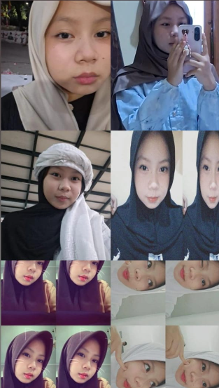
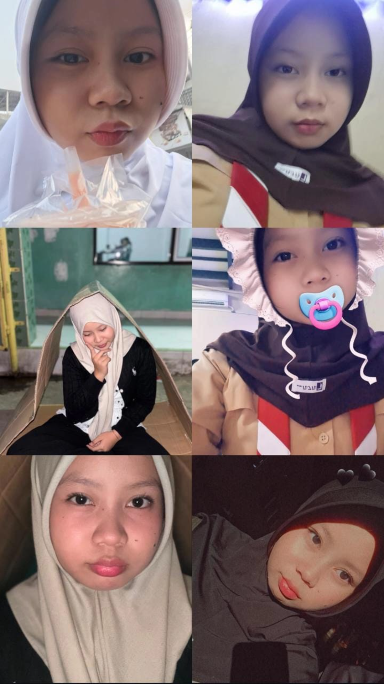
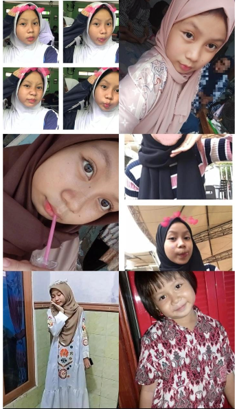
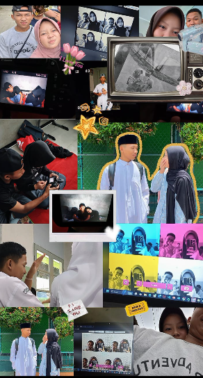
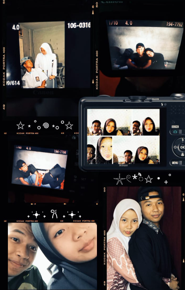

Aku punya sesuatu yang spesial buat sayang hari ini...
Tekan tombol di bawah untuk mulai ✨
🔐
Kode Rahasia
Masukkan kode rahasia untuk membuka kejutan 💌
ADA SESUATU UNTUK SAYANG
🎁
Tekan hadiahnya 💕
Make a Wish! 🎂💕
🔥 Matikan semua apinya dulu ya sayang 💕
🎂
HAPPY
BIRTHDAY!
Sayang 💕
Pesan Ulang Tahun untuk Sayang 💕 Selamat ulang tahun, sayang. ❤️ Hari ini adalah hari yang sangat berarti, karena di hari ini seseorang yang begitu berharga dalam hidupku dilahirkan ke dunia. Sayang, mungkin kata-kata yang kutulis di sini tidak akan pernah cukup untuk menggambarkan betapa bersyukurnya aku karena bisa mengenal dan mencintai sayang. Terima kasih karena sudah hadir. Terima kasih karena sudah memberikan begitu banyak warna dalam hidupku. Aku tahu perjalanan kita tidak selalu sempurna. Ada hari ketika kita tertawa sampai lupa waktu, tetapi ada juga hari ketika kita saling diam, salah paham, kecewa, atau bahkan terluka. Namun, dari semua itu aku belajar satu hal: ternyata mencintai bukan hanya tentang menikmati hari-hari yang indah, tetapi juga tentang memilih untuk tetap bertahan ketika keadaan tidak selalu mudah. Dan sampai hari ini, aku masih memilih sayang.
Bukan karena semuanya selalu sempurna, tetapi karena di balik segala kekurangan dan kesalahan yang kita punya, masih ada seseorang yang ingin terus kujaga, kusayangi, dan kuperjuangkan.
Sayang, di hari bertambahnya usia ini, aku tidak ingin hanya mengucapkan "selamat ulang tahun". Aku ingin mendoakan lebih banyak hal untuk kehidupan sayang.
Semoga langkah sayang selalu dipermudah. Semoga setiap lelah yang selama ini disimpan sendiri perlahan digantikan dengan kebahagiaan. Semoga kesehatan selalu menyertai sayang. Semoga hati selalu diberikan ketenangan. Semoga rezeki selalu dilapangkan. Semoga segala impian yang sedang diperjuangkan dapat terwujud satu per satu.
Dan kalau suatu hari nanti dunia terasa terlalu berat, semoga sayang selalu ingat bahwa ada seseorang yang akan selalu mendoakan dari jauh maupun dekat.
Aku mungkin tidak selalu tahu bagaimana cara membuat semuanya menjadi lebih mudah. Tetapi satu hal yang ingin selalu kuusahakan adalah menjadi seseorang yang tidak pergi hanya karena keadaan sedang sulit.
Aku ingin berada di sisi sayang ketika semuanya terasa indah. Dan aku juga ingin tetap berada di sisi sayang ketika semuanya terasa berantakan.
Aku ingin melihat sayang tersenyum ketika mendapatkan apa yang selama ini diperjuangkan. Aku ingin menjadi orang yang ikut bahagia ketika impian-impian sayang akhirnya tercapai.
Aku juga ingin menjadi tempat untuk pulang ketika hari terasa melelahkan.
Sayang, mungkin suatu hari nanti kita akan melihat kembali perjalanan ini dan menyadari betapa banyak hal yang sudah berhasil kita lewati bersama.
Mungkin kita akan tertawa mengingat pertengkaran-pertengkaran kecil yang dulu terasa begitu besar.
Dan kalau hari itu benar-benar datang, aku berharap satu hal.
Semoga kita masih menjadi dua orang yang saling memilih.
Karena kalau boleh jujur, aku tidak hanya ingin mencintai sayang untuk hari ini.
Aku ingin menyimpan lebih banyak cerita. Lebih banyak tawa. Lebih banyak perjalanan. Lebih banyak foto. Lebih banyak perayaan ulang tahun. Lebih banyak doa yang kita panjatkan bersama.
Dan lebih banyak hari di mana kita bisa mengatakan, "ternyata kita berhasil melewati semuanya."
Sayang, terima kasih sudah menjadi bagian dari hidupku sampai hari ini.
Terima kasih karena sudah membuat hari-hariku terasa lebih berarti.
Jika suatu hari nanti sayang merasa tidak cukup baik, tolong ingat bahwa di mata seseorang yang mencintai sayang, sayang selalu memiliki tempat yang begitu istimewa.
Tidak perlu menjadi sempurna untuk dicintai.
Tidak perlu selalu kuat untuk disayangi.
Tidak perlu selalu tersenyum untuk tetap berharga.
Sayang tetap berharga bahkan ketika sedang lelah.
Tetap berharga ketika sedang menangis.
Tetap berharga ketika sedang merasa gagal.
Dan tetap berharga bahkan ketika dunia sedang tidak berpihak.
Sekali lagi, selamat ulang tahun, sayang. 🎂❤️
Semoga tahun ini menjadi awal dari banyak sekali kebahagiaan baru.
Semoga setiap doa yang diam-diam dipanjatkan akhirnya menemukan jawaban terbaik.
Semoga setiap luka menemukan kesembuhan.
Semoga setiap kehilangan digantikan dengan sesuatu yang lebih indah.
Aku bersyukur pernah bertemu dengan sayang.
Aku bersyukur bisa mengenal sayang.
Aku bersyukur bisa mencintai sayang.
Selamat bertambah usia, sayang. ❤️
Panjang umur. Sehat selalu. Bahagia selalu.
Aku sayang sayang.
Hari ini, besok, dan selama Tuhan masih memberikan kesempatan untuk terus mencintai.
Selamat ulang tahun, sayangku. 🎂🌷❤️
SPECIAL MOMENT 📸
Untuk Sayang 💕



Terima kasih sudah hadir dan menjadi bagian dari cerita indah ini. ❤️
Untuk sayang 💕
Hari ini bukan cuma tentang bertambahnya satu angka di usia sayang 💕, tapi tentang perjalanan panjang yang sudah sayang lewati sampai bisa menjadi pribadi yang sekarang.
Lihatlah foto-foto itu… ada seorang anak kecil yang dulu belum tahu akan seperti apa kehidupannya nanti.
Anak kecil yang mungkin hanya tahu bagaimana caranya tersenyum, bermain, tertawa, dan menikmati hari-harinya.
Waktu terus berjalan, tanpa terasa anak kecil itu tumbuh… melewati banyak cerita, banyak air mata, banyak tawa, banyak hal yang mungkin tidak semua orang tahu.
Dan sekarang, anak kecil itu sudah tumbuh menjadi seseorang yang begitu berarti.
Kalau bisa kembali ke masa lalu, mungkin akuu ingin memeluk versi kecil dari sayang 💕 dan bilang,
“Teruslah tumbuh yaa… nanti akan ada banyak hal yang harus dilewati, tapi percayalah, sayang 💕 akan sampai sejauh ini.”
Mungkin sayang 💕 nggak sadar seberapa jauh perjalanan yang sudah dilewati.
Tapi dari foto-foto ini, akuu bisa melihat satu hal: waktu memang berjalan begitu cepat.
Wajah kecil itu perlahan berubah, hari-hari berganti, dan akhirnya sampailah kita di hari ulang tahun sayang 💕 hari ini.
Terima kasih sudah bertahan sejauh ini.
Terima kasih sudah menjadi diri sayang 💕 yang sekarang.
Dan terima kasih karena dari sekian banyak perjalanan hidup yang sudah dilewati, akhirnya akuu bisa menjadi salah satu bagian kecil dari cerita sayang 💕.
Selamat ulang tahun, sayang 💕🎂
Semoga setiap luka yang pernah datang diganti dengan kebahagiaan, setiap air mata diganti dengan senyuman, dan setiap doa yang pernah dipanjatkan perlahan menemukan jalannya untuk menjadi nyata.
Kalau suatu hari nanti sayang 💕 melihat foto-foto ini lagi, semoga sayang 💕 bisa tersenum dan berkata,
“Ternyata aku sudah sejauh ini…”
Dan akuu cuma ingin bilang satu hal…
Akuu bangga sama sayang 💕.
Bukan hanya karena siapa sayang 💕 sekarang, tapi karena semua versi diri sayang 💕 yang sudah berjuang sampai hari ini.
Selamat bertambah usia, sayang 💕.
Semoga perjalanan setelah ini jauh lebih indah.
Dan semoga, kalau Tuhan mengizinkan, akuu masih bisa melihat foto-foto baru sayang 💕 di tahun-tahun berikutnya.
“Ternyata anak kecil yang dulu itu sekarang sudah tumbuh sejauh ini.” 🤍✨


Kenangan Kita
Semoga semua kenangan indah ini selalu tersimpan.
Kalau suatu hari nanti kita melihat foto-foto ini lagi, mungkin kita akan tersenum mengingat betapa banyak hal yang sudah kita lewati bersama.
Dari hal-hal sederhana yang mungkin dulu terasa biasa saja, sampai momen-momen yang sekarang justru menjadi kenangan paling berharga.
Ada tawa di dalam foto-foto ini, ada kebahagiaan, ada cerita yang cuma kita yang tahu.
Tapi dari semuanya, ada satu hal yang membuat akuu bersyukur…
Kita pernah ada di setiap momen itu bersama.
Waktu mungkin akan terus berjalan.
Foto-foto akan semakin bertambah, wajah kita mungkin akan berubah, kehidupan kita juga pasti akan membawa kita ke banyak tempat dan cerita baru.
Tapi akuu berharap, kenangan yang ada di sini nggak pernah benar-benar hilang.
Karena setiap foto bukan cuma sekadar gambar.
Di dalamnya ada cerita tentang kita.
Tentang dua orang yang pernah tertawa bersama.
Tentang dua orang yang pernah saling menguatkan.
Tentang dua orang yang mungkin tidak selalu sempurna, tapi tetap memilih untuk belajar memahami satu sama lain.
Dan kalau nanti kita sudah semakin dewasa, mungkin kita akan melihat kembali foto-foto ini dan berkata,
“Ternyata dulu kita pernah sebahagia itu ya…”
Semoga saat hari itu tiba, kita masih bisa tersenum ketika mengingat semuanya.
Terima kasih sudah menjadi bagian dari begitu banyak kenangan indah dalam hidup akuu.
Terima kasih untuk setiap tawa, setiap cerita, setiap perhatian kecil, dan setiap waktu yang pernah kita habiskan bersama.
Mungkin kenangan ini akan menjadi bagian dari masa lalu suatu hari nanti…
Tapi bagi akuu, beberapa kenangan memang tidak pernah benar-benar menjadi masa lalu.
Karena sebagian dari mereka akan selalu tinggal di hati.
Semoga semua kenangan kita selalu tersimpan, bukan hanya di foto, tapi juga di hati kita masing-masing. 🤍✨
🌷
Pesan Kecil 💌
Selamat bertambah usia sayang 💕.
Semoga selalu diberikan kesehatan, kebahagiaan, dan kemudahan dalam setiap langkah.
Semoga semua impian yang sedang diperjuangkan dapat terwujud satu per satu.
❤️
ONCE AGAIN
HAPPY
BIRTHDAY 🎂
Sayang 💕
Semoga hari ini menjadi salah satu hari yang paling indah.